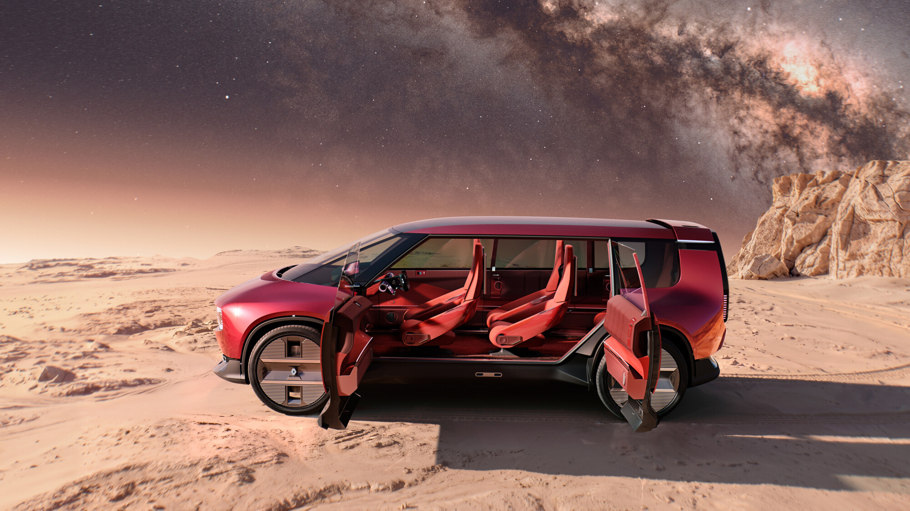

for DC Advanced UX Team.Vivi · Yohan · Libby · Lim Jisu · Katey · Anna
Back Issue

Cockpit
Scenic, Rafale: a 1,130 mm strip, no touch
A follow-up to the Paris cabin note: Renault says the OpenR Panorama, 1,130 mm wide and 110 mm tall, replaces the dashboard and is not a touchscreen. Two flexible touch displays swivel on the tubular base that holds the wheel, so the driver can grow or shrink what the strip shows. The compact wheel has a fixed hub, steer-by-wire and its own touch controls. Renault says the screen, not the concept van, reaches the next Scenic and Rafale. The car itself is not a production Espace.
파리 실내 보도에 이은 후속이다. 르노는 OpenR 파노라마가 너비 1130mm, 높이 110mm로 대시를 대신하며 터치스크린이 아니라고 밝혔다. 휠을 받치는 튜브형 베이스에서 유연한 터치 디스플레이 두 장이 돌아가며, 스트립에 뜨는 정보의 양을 늘리거나 줄인다. 컴팩트 휠은 고정 허브에 스티어 바이 와이어이고, 휠 자체에도 터치가 있다. 양산되는 것은 콘셉트 밴이 아니라 이 화면이며, 다음 세닉과 라팔이 먼저 받는다. 이 차 자체가 양산 에스파스는 아니다.
Toyota's patent, reported 15 October, fakes a clutchless shift for the electric Lexus LFA, expected in 2027. On a change, motor torque falls to zero, then returns, sometimes overshooting so it feels like a clutch biting. Sport and race profiles set how sharp the cut is. There is no pedal. The filing says most EV drivers have never used a clutch, and dropping it makes the shift quicker, closer to a sequential box. Lexus has not confirmed production. The 2025 concept already has plus and minus paddles.
10월 15일 보도된 도요타 특허는 2027년으로 예상되는 전기 렉서스 LFA용 무클러치 변속이다. 변속 때 모터 토크가 0까지 떨어졌다가 돌아오고, 목표를 잠깐 넘겨 클러치가 다시 물리는 느낌을 낸다. 스포츠와 레이스 프로파일이 세기를 정한다. 페달은 없다. 문서는 대부분 EV 운전자가 클러치를 몰라, 빼는 편이 시퀀셜에 더 가깝고 더 빠르다고 적는다. 렉서스는 양산을 확인하지 않았다. 2025년 콘셉트에는 플러스·마이너스 패들이 있다.
Figma launched Specs on 15 October, an open beta on paid plans for web, desktop and mobile. Press D and a spec sits on the canvas beside the frames it describes. Drop in a .md file, or embed a FigJam board, a frame or any node, so the text is not a screenshot. The agent can read it and reply in comments. Code layers, also in open beta, turn back into editable frames with Extract designs. Sent through MCP, a coding agent gets the Markdown and the linked frames.
피그마가 10월 15일 Specs를 열었다. 유료 플랜의 웹·데스크톱·모바일 오픈 베타다. D를 누르면 스펙이 설명 대상 프레임 옆 캔버스에 놓인다. .md를 떨어뜨리거나 FigJam, 프레임, 노드를 임베드해 글이 스크린샷으로 남지 않게 한다. 에이전트는 읽고 댓글에 답한다. 역시 오픈 베타인 코드 레이어는 Extract designs로 편집 가능한 프레임이 된다. MCP로 넘기면 Markdown과 연결된 프레임이 함께 간다.
Oddfellows in Portland made the launch film for Harvey II, a legal AI product, and skipped the usual chrome. The picture is marks, language and documents taking shape, as if a brief were being written. Stash posted it on 15 October. From first territories and the script through design, animation and delivery, the studio says the job took about a month with Harvey's team. The motion language is memory: intelligence that keeps what came before, drawn as graphite rather than a glassy dashboard.
포틀랜드의 오드펠로우스가 법률 AI 하비 II의 론칭 필름을 만들었고, 흔한 크롬 질감은 뺐다. 화면은 자국, 언어, 형태를 갖춰 가는 문서다. 렌더가 아니라 브리프가 써지는 쪽에 가깝다. 스태시가 10월 15일 올렸다. 첫 방향과 스크립트부터 디자인, 애니메이션, 납품까지 하비 팀과 약 한 달이 걸렸다고 한다. 모션 언어는 기억이다. 앞선 내용을 붙드는 지능을 유리 대시가 아니라 흑연으로 그렸다.
Bo Made It's InkBoy runs Game Boy games, including Super Mario Land, on an ESP32 with built-in e-paper, at about 30 frames a second. Instead of flashing the whole panel, it shortens the pulses and updates single pixels, then builds greys from controlled transitions, which can leave a trail. A faster mode dithers in black and white. Games load from microSD, with save and resume. A second ESP32-C3 in a printed shell sends controls over USB-C, with Bluetooth and a speaker. It follows Wenting Zhang's PaperBoy.
Bo Made It的InkBoy在自带电子纸的ESP32上跑Game Boy，包括《超级马力欧大陆》，大约每秒30帧。它不整屏闪，而是缩短脉冲、只改单个像素，再用受控过渡做出灰阶，移动时可能留痕。更快的模式用黑白抖动。游戏从microSD读取，可存档继续。打印外壳里的第二块ESP32-C3经USB-C送按键，并有蓝牙和扬声器。它延续Wenting Zhang的PaperBoy。
Bo Made It의 잉크보이는 전자종이가 붙은 ESP32에서 게임보이를 돌린다. 슈퍼 마리오 랜드를 포함해 초당 약 30프레임이다. 화면 전체를 번쩍이지 않고, 펄스를 줄여 픽셀만 고친 뒤 제어된 전이로 회색을 만든다. 잔상이 남을 수 있다. 더 빠른 모드는 흑백 디더링이다. microSD에서 읽고 저장해 이어 한다. 출력 껍질의 ESP32-C3가 USB-C로 입력을 보내며, 블루투스와 스피커가 있다. 웬팅 장의 페이퍼보이를 잇는다.
David Smalling's oils, covered on 15 October, set a dinner on the wrong furniture. Standing Ovation (2026) hangs gold cloth behind a French horn, a trumpet and a candelabrum tied in pink ribbon, pearls wound around them. Tallow and Supplemental Course put that candelabrum on a stack of mattresses, the quilting puckered so candlelight bends in the creases. He paints oil on wood, opaque then translucent. Tallow names the animal fat once used for candles. A second Templon show opens in Brussels on 12 November.
10월 15일 기사가 데이비드 스몰링의 유화를 본다. 만찬이 엉뚱한 가구 위에 있다. Standing Ovation(2026)은 금색 천 뒤에 프렌치 호른, 트럼펫, 분홍 리본의 칸델라브라를 두고 진주를 감는다. Tallow와 Supplemental Course는 그 촛대를 매트리스 더미 위에 올린다. 누빔이 오그라 촛불이 주름에서 꺾인다. Tallow는 초를 만들던 동물 기름이다. 템플롱 두 번째 개인전은 11월 12일 브뤼셀이다.
Futurewave's Arc is an open torc in Argentium silver. It pulses when phone use passes a limit you set, such as 30 minutes on chosen apps. A second pulse follows if you stay, then it goes quiet and the interval restarts. There is no screen and nothing to dismiss. The studio says it keeps no history and needs no account. A piezoelectric element makes the pulse, an ONiO.zero chip uses Bluetooth Low Energy, and a 25 mAh curved cell follows the bend. If the electronics die, it remains a bracelet.
퓨처웨이브의 아크는 아르젠티움 실버 열린 토크다. 고른 앱 30분처럼 한도를 넘으면 한 번 진동한다. 계속 보면 같은 펄스가 한 번 더 오고, 조용해진 뒤 간격이 다시 시작된다. 화면도, 치울 알림도 없다. 기록도 계정도 없다고 한다. 압전 소자가 펄스를 만들고, ONiO.zero가 저전력 블루투스를 쓰며, 25mAh 곡면 배터리가 굽음을 따른다. 전자가 죽어도 팔찌로 남기려 한다. 출시일은 없다.
Euro NCAP's 12 October round scores the interface. Indicators, wipers and washer, hazards, horn and eCall should be a direct physical input. The new Audi Q7 scores 100% on those tasks and 80% on comfort and infotainment, 90% overall, with buttons and stalks in sight. The Kia EV2 also scores well. The Xpeng X9, hiding core functions in the centre screen, scores 20% on primary driving controls. The BMW iX3 is at 100%, the Cupra Raval and Geely E2 at 80%, Zeekr 7GT and Aion UT at 20%, and the Leapmotor B05 at 0%.
Euro NCAP 10月12日这轮给界面打分。转向灯、雨刮与洗涤、双闪、喇叭和eCall应为直接的实体操作。新奥迪Q7这些任务100%，舒适与信息娱乐80%，综合90%，按键和拨杆都露在外。起亚EV2同样高。小鹏X9把核心功能藏进中控屏，主要驾驶控制20%。今年已测车型中，宝马iX3为100%，Cupra Raval与吉利E2为80%，极氪7GT与埃安UT为20%，零跑B05为0%。
유로 NCAP 10월 12일 라운드는 인터페이스를 점수 낸다. 방향지시등, 와이퍼와 워셔, 비상등, 경적, eCall은 누르는 물리 입력이어야 한다. 새 아우디 Q7은 그 과제 100%, 쾌적·인포 80%, 종합 90%다. 버튼과 스토크가 보인다. 기아 EV2도 높다. 핵심을 센터 화면에 숨긴 샤오펑 X9는 주요 주행 조작 20%다. BMW iX3는 100%, 쿠프라 라발과 지리 E2는 80%, 지커 7GT와 아이온 UT는 20%, 리프모터 B05는 0%다.
Slate opened its first experience centre on 15 October in a former Tesla store at 1053 W Grand Avenue, Chicago, and Electrek sat in the truck. The door handle is heavily sprung and snaps back. The steering wheel is thick, the seat adjusters are manual, and the tailgate latch and charge-port cover share that same click. The centre console looks like shiny plastic and does not flex under a hand. The design read is where the money went: the parts a hand actually meets.
Slate 10月15日在芝加哥1053 W Grand Avenue的前特斯拉店开了第一家体验中心，Electrek坐进了车里。门把手弹簧很硬，松手会弹回。方向盘很厚，座椅调节是手动的，尾门闩和充电口盖也是同一种干脆的咔嗒。中控台看着像亮面塑料，手按下去却不软。副驾这一侧，在芝加哥破路面上安静，没有报道异响。设计上的判断很具体：钱花在手真的会碰到的零件上。
슬레이트가 10월 15일 시카고 1053 W 그랜드 애비뉴의 옛 테슬라 매장에 첫 체험 센터를 열었고, 일렉트렉이 트럭에 앉았다. 도어 핸들은 스프링이 세고 놓으면 튕겨 온다. 휠은 두껍고 시트 조절은 수동이며, 테일게이트 래치와 충전구 커버도 같은 클릭이다. 센터 콘솔은 번들거리는 플라스틱처럼 보이지만 눌러도 휘지 않는다. 동승석에서 느낀 깨진 노면은 조용했다. 돈은 손이 실제로 만나는 부품에 가 있다.
Swoop: a small display, gears that shift themselves
Electrek's 15 October ride of the Xtracycle Swoop ASM keeps its eye on the cockpit. Shimano's display is small on purpose: battery, speed, gear, and a choice of range, odometer or trip. Automatic CUES Di2, ten speeds on an EP6 Cargo mid-drive, downshifts when you stop so a loaded start is not in a tall gear. Manual buttons stay on the right bar. A dropper post drops the saddle at a light, then raises it. Wheels are 24 inches in front and 20 behind, on 2.4-inch Metroloads. The pack is 630 Wh, about 60 miles.
일렉트렉이 10월 15일 엑스트라사이클 스웁 ASM을 탔고, 초점은 콕핏이다. 시마노 화면은 일부러 작다. 배터리, 속도, 기어, 남은 거리·적산·트립. EP6 카고의 10단 CUES Di2는 멈추면 단을 내려, 짐을 실은 출발이 높은 기어에 걸리지 않게 한다. 오른쪽 바에는 수동 버튼이 남는다. 드롭퍼는 신호에서 안장을 내렸다가 올린다. 앞 24인치, 뒤 20인치, 2.4인치 메트로로드. 팩은 630Wh, 60마일이다.
Rider clusters from 4 to 8.8 inches, phone optional
AUMOVIO's 14 October note for EICMA, 3 to 8 November in Milan, shows rider clusters from 4 to 8.8 inches. The offer is graphics, a flexible software stack and more than one shape, so a scooter and a tourer need not share a rectangle. A Connected Infotainment Box keeps navigation up when no phone is paired. Beside it, an automated manual gearbox works the clutch and the shift, with short change times. The booth is Hall 10, C64. These are supplier parts, and the inch range is what a cluster designer can use.
아우모비오가 10월 14일, 11월 3일부터 8일 밀라노 EICMA를 위해 밝힌 라이더 클러스터는 4인치에서 8.8인치다. 그래픽, 유연한 소프트웨어, 한 가지가 아닌 형태라서 스쿠터와 투어러가 같은 직사각형을 쓸 필요가 없다. 커넥티드 인포테인먼트 박스는 전화가 없어도 내비를 유지한다. 옆의 자동 수동변속기는 클러치와 변속을 짧게 처리한다. 부스는 10홀 C64다. 공급사 부품이고, 인치 범위가 클러스터 디자이너가 가져갈 부분이다.
On 14 October Adobe switched on a beta in Acrobat that sends a document to the Express AI Assistant and returns a one-page layout: flyer, social post, newsletter, invitation, card or illustration. It starts from a PDF, a PDF Space or a chat summary, and offers up to three versions filled from the file. You refine by chat, download an image, or continue in Express. Acrobat Studio, AI Assistant Plus and Acrobat Express subscribers get it. The model is a partner's, and Acrobat says so before it generates.
10월 14일 어도비는 아크로뱃에서 문서를 익스프레스 AI 어시스턴트에 넘겨 한 페이지를 돌려준다. 전단지, 소셜, 뉴스레터, 초대장, 카드, 일러스트다. PDF나 채팅 요약에서 시작하고, 원문이 채워진 안을 최대 세 장 준다. 대화로 고치거나 이미지로 받고, 익스프레스에서 이어 간다. 아크로뱃 스튜디오, AI 어시스턴트 플러스, 아크로뱃 익스프레스용이다. 모델은 파트너 것이고, 생성 전에 알린다.
It's Nice That profiles Núria Balinha, who makes about one zine a week. Pages mix found images, collage, drawing and type she says she bends almost to a fault. Recent titles include Prophetic Perfect Tense, Cheugy and Tear, Touch, Rub. She plans the subject, then works fast in InDesign so the layout keeps the day's mood. Baldessari supplies the joke, Rothko and Gauguin the colour. One zine answers Yoko Ono's Tunafish Sandwich Piece. She wants a reaction. If a spread misses, the making was still the point.
잇츠 나이스 댓이 누리아 발리냐를 소개한다. 거의 일주일에 진 한 권이다. 찾은 이미지, 콜라주, 드로잉, 그리고 거의 고장 날 때까지 휜 활자가 한 페이지에 있다. 최근 제목은 Prophetic Perfect Tense, Cheugy, Tear, Touch, Rub다. 주제를 정한 뒤 인디자인에서 빨리 푼다. 농담은 발데사리, 색은 로스코와 고갱이다. 한 권은 오노 요코의 Tunafish Sandwich Piece에 답한다.
André Britz, working near Cologne and Bonn, bound a personal series as Gone with the Clouds, 64 pages subtitled memory landscapes 25–26. He draws and collages places from memory, with no photo and no named site, so details blur or get invented. The pale blue cover holds one drawing and a staggered, stacked title. A pink elastic is the binding, left open so the book feels unfinished, the way a memory does. Creative Boom ran it on 14 October. There is no grid to defend, only a pen following what stayed.
科隆与波恩一带的André Britz把个人系列订成《Gone with the Clouds》，64页，副题memory landscapes 25–26。他凭记忆画风景、做拼贴，不用照片也不指定地点，细节会模糊或被重写。淡蓝封面只有一幅画和错位堆叠的标题。装订是粉色松紧带，故意不封死。Creative Boom于10月14日刊出。没有要守的网格，只有跟着残留画面走的笔。
쾰른·본의 앙드레 브리츠가 개인 작업을 Gone with the Clouds로 묶었다. 64쪽, 부제는 memory landscapes 25–26이다. 사진도 지명도 없이 기억으로 그리고 콜라주해, 세부는 흐려지거나 다시 쓰인다. 옅은 파란 표지에는 그림 한 장과 어긋난 제목이 있다. 분홍 고무줄이 제본이고 일부러 열어 둔다. 크리에이티브 붐이 10월 14일 실었다. 지킬 그리드는 없다.
On opened Ondesign on 15 October, a platform for its own designers, from graphics to shops and rooms. The job It's Nice That pulls out is storage for shoe testers. Architect Astrid von Mühlenbrock says the team watched the rummaging and let the furniture follow. Stylist Zakia Ali describes the 2026 Paris Fashion Week popup as creative direction turned into a room. Matt Tucker, who leads brand voice, treats the graphics as Swiss engineering set against a human pace.
On于10月15日打开Ondesign，给自家设计师的平台，从平面到店铺和空间。It's Nice That抽出的工作，是给试鞋的人做储物。建筑师Astrid von Mühlenbrock说，团队看他们翻找，再让家具跟着走。造型师Zakia Ali把2026年巴黎时装周快闪说成创意方向被做成一间房。Matt Tucker把平面看成瑞士工程和人的节奏之间的张力。
온이 10월 15일 온디자인을 열었다. 그래픽부터 매장과 공간까지, 자기 디자이너를 위한 플랫폼이다. 잇츠 나이스 댓이 집어 든 일은 신발 테스터용 수납이다. 건축가 아스트리드 폰 뮐렌브로크는 뒤지는 모습을 보고 가구가 따르게 했다고 한다. 자키아 알리는 2026년 파리 팝업을 디렉션이 방이 된 일이라고 말한다. 맷 터커는 그래픽을 스위스 공학과 사람 속도의 긴장으로 본다.
Stellar Jockeys told 80 Level on 15 October how Brigador Killers, in Steam Early Access, keeps destruction readable. The first game swapped props into a few rubble states. Killers gives small props their own pyro: particles, sprites, light and sound together. Broken buildings throw dust and lose contrast. A railgun can cross a block, and a damaged tile can pull its neighbour down. A Blender script spins vehicles through 128 angles, often mirrored, exporting diffuse plus depth. Explosions come from EmberGen.
스텔라 자키스가 10월 15일 80 레벨에, 스팀 앞서 해보기 중인 브리가도르 킬러스의 파괴가 어떻게 읽히는지 말했다. 전작은 프롭을 몇 가지 잔해로 바꿨다. 속편은 작은 프롭에도 파이로를 준다. 파티클, 스프라이트, 빛, 소리가 함께 난다. 부서진 건물은 먼지를 일으키고 대비를 잃는다. 레일건은 블록을 관통하고, 손상된 타일은 이웃을 끌어 무너뜨린다. 블렌더가 차량을 128각도, 종종 미러로 돌려 디퓨즈와 깊이를 낸다. 폭발은 엠버젠이다.